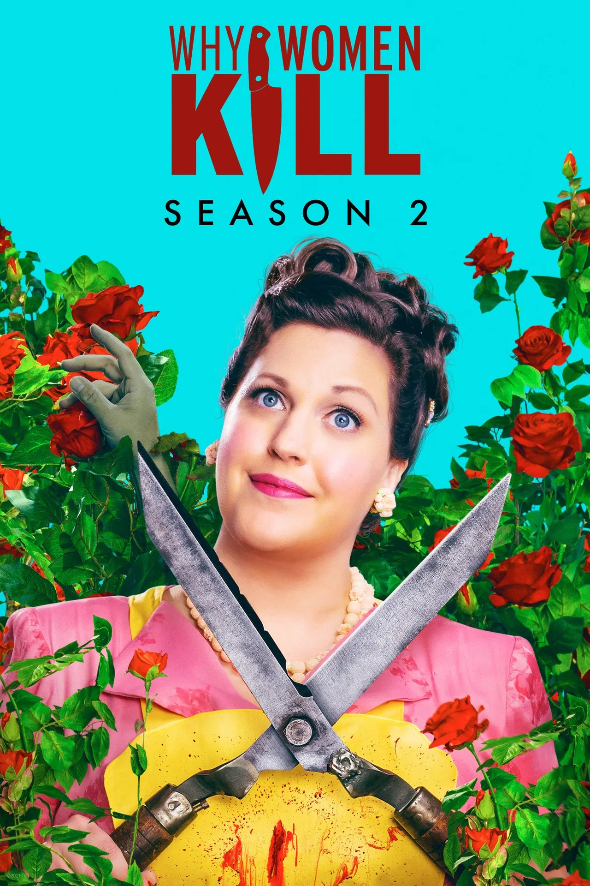

An anthology series that follows three women in different decades all living in the same house, as they deal with infidelity and betrayals in their marriages.
Future Associate delivered 130+ VFX shots across the production.